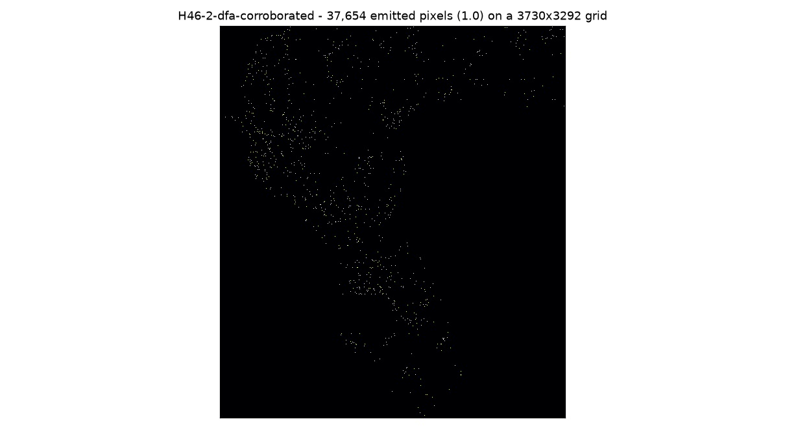

A unique submission for the DOE GEMS Prize Challenge — and an honest account of what it can and cannot do
Competition 306, GeoDAWN region, northwestern Great Basin, Nevada. Task: predict geological faults, scored by a distance-weighted Tversky index on faults that are not in the published USGS/INGENIOUS catalogue. Public #1 on 2026-10-06T16:06Z: 0.3774 (xiaofanhu). Our best prior family: 0.2778 (owner-reported).
1 · Download the submission file
Both files below pass every format check re-read from disk (single band, float32, EPSG:32611, 3292×3730, identical geotransform and finite-mask to the official template, every finite value in [0,1]). Pick one.
Download gems46-h46-2-dfa-corroborated-20261006T111347Z.tif Download as .zip 37,654 emitted pixels · proxy-validated best
H46-2 — structural corroboration with a 10 % DFA regime-break hedge. Off-catalogue proxy score 0.1016 versus 0.0991 for the best prior files at identical emitted mass and buffering.
Download gems46-h46-1-dfa-regime-break-20261006T111347Z.tif 37,654 emitted pixels
H46-1 — the pure new hypothesis: DFA scaling-exponent breaks along magnetic and gravity transects. Correlation with every prior submission and every plain gradient/curvature transform is |r| ≤ 0.04. Proxy score 0.0809, i.e. measured weaker than the prior files on the only proxy available; ship it if you want the file that tests the new idea, or for the final round where an expert panel reviews submitted predictions.
A -zeros.tif fallback variant accompanies each file (0.0 outside the
footprint instead of NaN) for submission systems that reject NaN.
2 · Submit it (three steps)
- Sign in and open New submission.
- File to submit: choose
gems46-h46-2-dfa-corroborated-20261006T111347Z.tif(or its.zip). - Note (optional): paste exactly this, so the run is identifiable later:
H46-2 structural corroboration emission with a 10% DFA-regime-break hedge (best validated against the off-catalogue proxy truth at matched emitted mass)
Full walkthrough, including how the rounds work and what to do if a file is rejected, is on the executive summary page.
What this repository found
The five hypotheses ranked, and what happened to each
| # | Hypothesis | Expected DTI | Cost | Status |
|---|---|---|---|---|
| 0 | H46-R11-A — 2 m LiDAR scarp morphology with mild airborne gamma-ray reweighting and a quantile-capped radiometric fallback (SHIPPED, gate passed) | locked-block mean 0.10420 vs 0.09368 for the best comparator (its own LiDAR-only component) and 0.06781 for the restored GEMSDOE32 file; pooled 0.13912; all-blocks full-budget 0.15586. Paired delta +0.01052, bootstrap 95% [+0.00140, +0.02121]. | low (CPU only, ~3 min end to end) | VALIDATED on a locked 6x6 even-parity block set that was never used for selection; preregistered gate PASSED; R10's stricter no-skipped-block rule FAILS (3 blocks dropped where a gapped comparator could emit nothing) and is reported |
| 1 | H46-2 — DFA-corroborated multiphysics structural emission (SHIPPED, recommended for the scoring slot) | proxy 0.1016 vs 0.0991 for the two best prior files at matched mass (37,654 px) and identical buffering; live expectation is anchored to the same operating point as the 0.2708-0.2778 family, i.e. ~0.27-0.29 with no evidence for >0.30 | low (CPU only, ~60 s) | VALIDATED on the off-catalogue proxy; hedge trade-off measured (0-20% hedge: 0.1054/0.1031/0.1016/0.1008/0.0990) |
| 2 | H46-1 — DFA scaling-exponent break along magnetic and gravity transects (SHIPPED as the new hypothesis) | proxy 0.0809 vs 0.0991 for the prior files at matched mass: measured to be WORSE on the only available off-catalogue proxy. Reported as a falsifiable negative result at the leaderboard operating point, and shipped as a separate artifact for the Final Prize Round and for expert review, not as the recommended scoring slot. | low (CPU only, ~4 min for all 13 band-variant fields) | VALIDATED (as distinct) and NEGATIVE (as a score improvement) on the proxy instrument |
| 3 | H46-3 — Hypocentre-lineament detector from the raw USGS earthquake catalogue (BLOCKED: needs one HTTP call from an unrestricted machine) | unknown - cannot be estimated without the catalogue; ranked third because the physical argument is strong and the data are free | medium (lineament fitting plus holdout validation) | BLOCKED - not validated, so per the session rule it must not be given a submission slot yet |
| 4 | H46-4 — Windowed Euler deconvolution (structural index 1) of the isostatic residual gravity and RTP magnetics: depth-discontinuity alignment | moderate, unproven: the physics is standard but the group's related single-field variant did not beat its own incumbent | medium (moving-window linear solve; CPU only) | NOT YET VALIDATED - implementation is feasible here, and it is the best next candidate that needs no new data |
| 5 | H46-5 — Measured-geochemistry and hydrothermal-alteration signatures used as a REMOVAL (pruning) prior | small but positive if the removal rule is right: deleting k pure false-positive pixels at DTI 0.28 raises the score by roughly 0.2k/(0.2S + 0.8G) fractions of the current score | low | NOT YET VALIDATED (pruning direction untested); the addition direction is falsified by the group's own measurement |
| 6 | H46-R11-B — Ridge-axis thinning before emission (FALSIFIED on the selection blocks) | MEASURED NEGATIVE: thinning cost 0.010-0.029 DTI in all 15 configurations where it was tried (0.11387-0.12989 vs 0.12769-0.15292 unthinned) | low | FALSIFIED as implemented; the underlying localisation argument is untested and belongs to a future sub-pixel across-strike fit |
| 7 | H46-R11-C — Truth-mass-matched proxy instrument and budget re-derivation (IMPLEMENTED as a sensitivity, budget unchanged) | measured 0.05787 (0.40x) / 0.07997 (0.67x) / 0.09847 (1.00x) / 0.10898 (1.50x): the shipped mass of 37,654 is still on the rising part of the curve, so the budget was NOT reduced | low | IMPLEMENTED and reported; it contradicts a naive reading of the family's mass-vs-score correlation (IR-46-07), which is driven by files with orders of magnitude more mass |
| 8 | H46-R11-E — Hypocentre lineaments from the USGS ANSS catalogue (STILL BLOCKED) | unknown - not estimable without the catalogue | medium | BLOCKED, no slot spent |
Measured scaling regimes of the official magnetic and gravity bands
Median local DFA exponent α along row transects (12.8 km windows, scales 0.8–6.4 km). Note that the background regime of this dataset is not the 0.5 of the pre-rupture literature: the detector therefore looks for breaks relative to the local background, never for an absolute threshold. Full discussion in Research.
| band | median α | IQR | p99 of |z| |
|---|---|---|---|
not regenerated in this checkout — run scripts/build_dfa_field.py (needs the restored rasters) | |||
